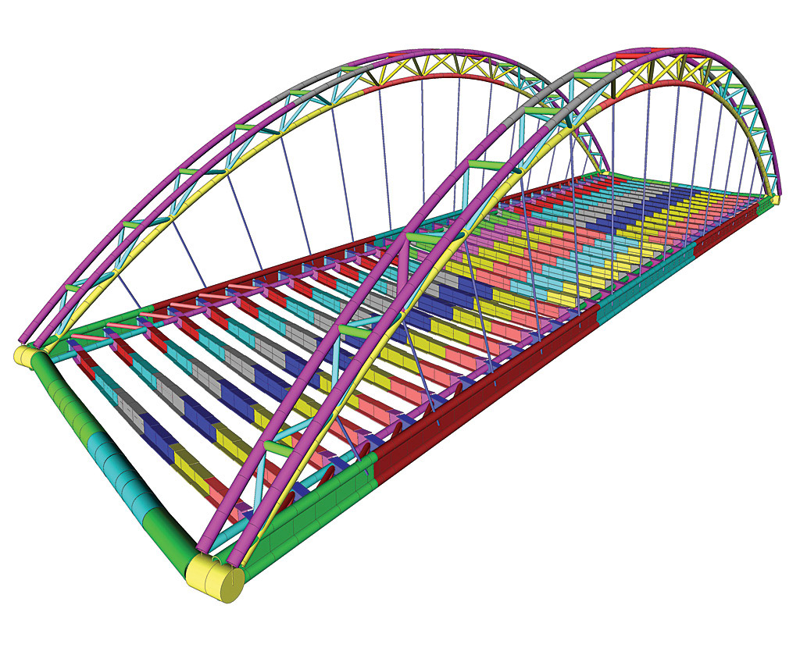
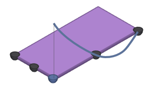

Problema de Ejemplo
Introducción
Un ingeniero desea construir un puente sobre un río y que una dos ciudades muy transitadas. Para ello, necesita conocer cómo la estructura que él propone se comportará bajo una determinada carga. Las ecuaciones que describen la distribución de tensiones estructurales son conocidas, pero no pueden ser resueltas de forma directa para formas complicadas como las de un puente.
Sin embargo, las ecuaciones sí pueden ser resueltas para figuras simples, como triángulos y rectángulos. El FEM toma ventaja de este hecho.
Reemplazamos entonces la forma única y complicada del puente con una estructura aproximadamente similar conformada por elementos simples. Esta nueva composición de elementos se le hace referencia por el nombre de “malla de elementos finitos”.
Diseñando la Malla
El primer paso es entonces el de diseñar la malla. Para ello, debemos decidir qué tipo de elemento vamos a utilizar. Por ejemplo, podemos optar por elegir:
- Elementos 1D.
- Elementos 2D.
- Elementos 3D.
La exactitud del resultado va a depender del número de elementos que elijamos para componer la malla. Mientras más elementos haya, más pequeños van a ser, y más precisos serán los resultados obtenidos. Desafortunadamente, elementos más pequeños también significan más cálculos a llevar adelante. Por lo que lo que se busca es encontrar un balance entre una precisión tolerable del resultado y una razonable rapidez de cálculo.
De nuevo al problema del puente
Para la malla del puente, hemos decidido optar por elementos 2D con forma de rectángulos de ocho puntos. Estos puntos son referidos como “nodos”. En general, consideramos a cada nodo como capaces de desplazarse tanto vertical como horizontalmente. La excepción sería que estos nodos no pueden ir más allá que los límites del borde que les hemos establecido: estas son, las condiciones de borde del problema. Éstas deben estar incluidas en el modelo físico para que de esa manera la solución obtenida sea ÚNICA.
Una vez establecida la malla y los elementos que la componen, como así también las propiedades materiales del objeto, establecemos que tipos de carga se desean aplicar a la estructura.
Supongamos que tenemos una sola carga en nuestra estructura, en el centro del puente. El objetivo sería arribar a una expresión matemática que describa el comportamiento de todo el sistema.
Estableciendo los desplazamientos en los nodos
Comenzaremos con una descripción simple de las relaciones básicas de desplazamiento de cada nodo como funciones en las coordenadas `(x,y)`.
Supongamos en primer lugar que el desplazamiento `u(x,y)` se exprese como forma polinómica de `x` e `y`. Para asegurar la continuidad del desplazamiento dentro del elemento a lo largo del eje de coordenadas, la variación debe ser CUADRÁTICA.
Sí tenemos dos elementos rectangulares que comparten un mismo lado, a su vez éstos tienen en común tres nodos, y puesto que tres valores determinan una función cuadrática de forma única, aseguramos de esta forma que a lo largo de dicho lado las funciones correspondientes a los desplazamientos serán iguales. Lo anterior ocurre en ambos lados del elemento rectangular. Por consiguiente, escribimos:
Puesto que la variación de la función de desplazamiento ha de venir determinada unívocamente por la cantidad X de nodos del elemento, sólo pueden retenerse X coeficientes de desarrollo.
Obtención de la Matriz de Rigidez de cada elemento
En nuestro ejemplo, cada elemento posee 8 nodos, y por cada uno de estos describimos el desplazamiento de estos como funciones de sus coordenadas:
Del conjunto de ecuaciones anterior, obtenemos de forma abreviada el sistema de ecuaciones algebraicas siguiente:
El superíndice `e` indicará siempre que el vector o matriz con dicha notación pertenecerá a un elemento en particular, más que al sistema de ecuaciones global.
Hemos alcanzado de esta forma el punto inicial de una serie de pasos que van a estar basados en las leyes fundamentales de la mecánica.
El primer paso relaciona los desplazamientos con las tensiones, y mediante la utilización del Principio de los Trabajos Virtuales, llegamos a obtener una relación entre los desplazamientos y las fuerzas externas aplicadas al elemento:
Obtuvimos entonces una matriz de rigidez `\mathbf{K}^e` por cada elemento `e` de la malla.
Obtención de la Matriz de Rigidez global
El siguiente paso es combinar todas estas matrices individuales de rigidez `\mathbf{K}^e` que obtuvimos por cada elemento en una única y gran matriz `\mathbf{K}` que represente la rigidez de todo el sistema.
Es en este momento en que podemos empezar a hacer simplificaciones. Por ejemplo, las ecuaciones asociadas a nodos en común entre elementos aparecerán en varias matrices. De esta forma, se pueden realizar simplificaciones al obtener la matriz global.
Una vez ensamblada la nueva matriz global, podemos obtener los valores de los desplazamientos tras determinar las fuerzas externas aplicadas, al resolver:
El vector `\mathbf{u}` contendrá a lo sumo una fila por cada nodo de la malla. De esta manera, una forma simple de obtener los desplazamientos en el interior de los elementos es la de interpolar estos valores conocidos en los nodos.
Dado a que el tamaño de la matriz obtenida `\mathbf{K}` puede ser muy grande para ser resuelta mediante calculaciones manuales, se procede a utilizar el poder de cómputo para resolverla. Una ventaja que existe aquí es que la matriz de rigidez global no ha de tener que volverse a recalcular sí cambiamos las fuerzas externas actuantes.